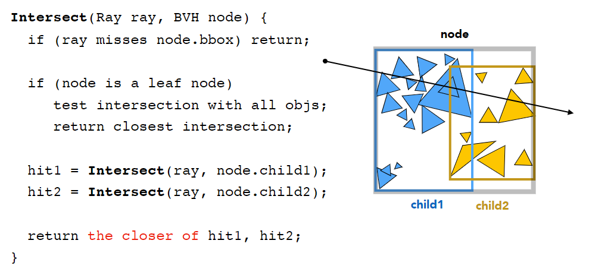
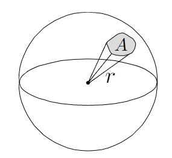
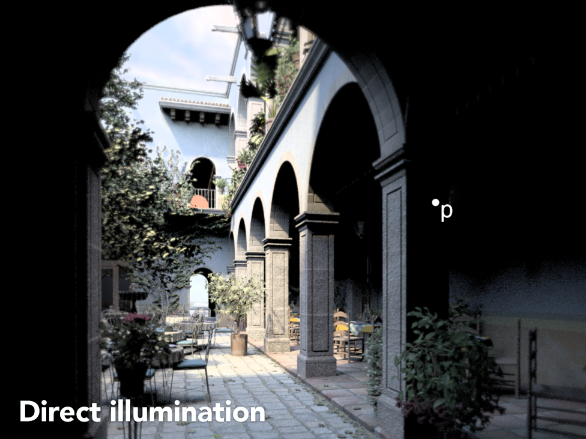
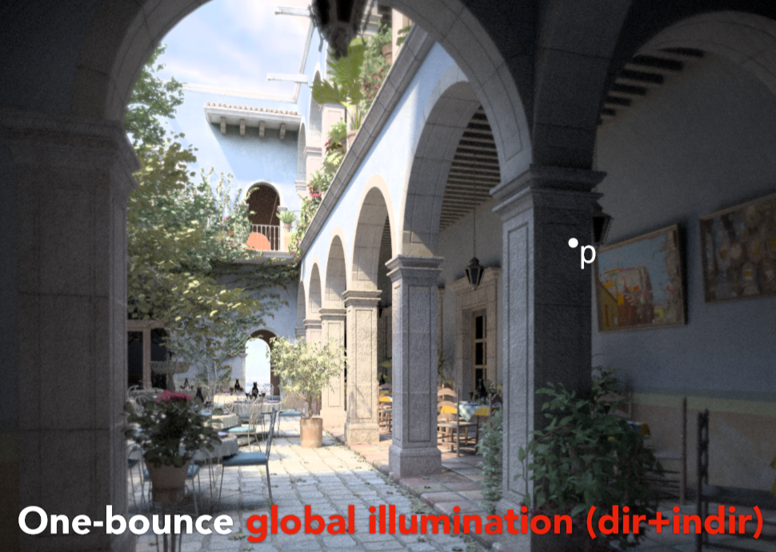
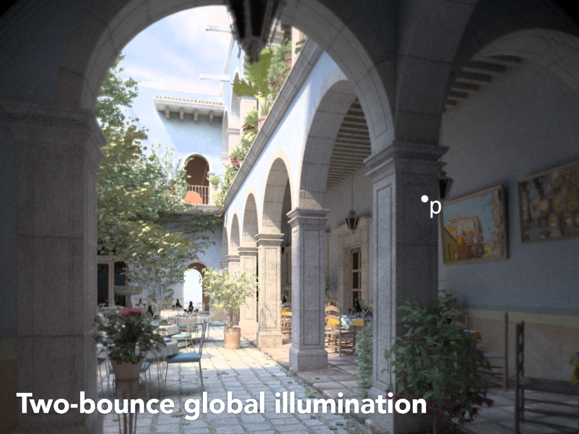
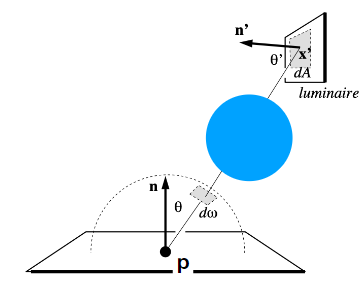

阴影映射（Shadow Mapping）
在冯氏光照模式中，我们只考虑光源与着色点的位置关系，并没有考虑光源与着色点之间是否有物体遮挡。因此无法绘制阴影。
阴影映射是使用光栅化（rasterization）技术绘制阴影的方法。
主要思想：确定一个点不在阴影中，那么该点既能被光源看到，也能被摄像机看到。
1 把光源当成摄像机，绘制一幅从光源出发的深度图。
2 从摄像机出发，判断摄像机到点的距离与第1步生成的深度图中距离进行比较。
如果摄像机到点的距离与第1步生成的深度图中距离相等，则该点不在阴影中，是可见点。如下图中橘黄色部分。
如果摄像机到点的距离与第1步生成的深度图中距离不相等，则该点在阴影中，是不可见点。如下图中红色部分。
效果：
把光源当作摄像机所看到的图：
绘制深度图：
进行距离比较，绿色部分为摄像机到点的距离等于深度图中的部分。非绿色部分为阴影部分。
可以看出，非绿色部分比较脏。
阴影映射的问题：
- 硬阴影（只有点光源产生）
- 阴影质量取决于深度图的分辨率
- 难以判断浮点数的相等
硬阴影与软阴影
硬阴影可以看出阴影的边缘比较锐利，只有不考虑光源大小的点光源产生。
软阴影更符合现实，主要是考虑了光源的大小。

产生的原因类似于日食的本影（光源被完全遮住）和半影（光源被部分遮住）。
光线
在图形学中对光线的三个规定：
- 光线沿直线传播
- 光线之间不会发生碰撞
- 光路可逆（光线从光源出发到眼睛，也可看成光线从眼睛出发到光源）
Whitted-Style 光线追踪
概述
为什么要有光线追踪？
因为光栅化无法处理全局光照效果，指（软）阴影和光线的多次反射。
局部光照：
将眼睛当作针孔摄像头，光线从眼睛出发，穿过屏幕中的一个像素（本次渲染的也是这个像素点的颜色）。光线与物体产生多个交点（选择最近的交点）。
将光源与该交点连线，如果中途没有被别的物体阻挡，将按照，比如Blinn Phong模型对该像素进行着色；如果中途被阻挡说明该点是阴影。
但其实，光线在实际场景中不应该只与物体产生一个交点，由于光线的反射与折射，会与场景中的物体产生多个交点。
Whitted-Style 光线追踪 原理：
光线在与圆形物体产生了第一个交点，光线在圆形物体上反射与三角形物体产生了新交点，在圆形物体上产生折射与圆形物体有了第二个交点，并且与长方体物体也产生了交点。
将这些交点与光源连线，判断中途有没有被阻挡，是否在阴影中。综合这些交点的信息，来确定最终像素点的颜色。

判断光线与表面相交
光线数学定义
- t：时间
- o：原点
- d：方向
隐式表面相交
光线与球相交的条件，交点p必须满足既要在球上也要在光线上。
光线：$r(t)=o+td \quad 0\leq t < \infty$
球：$p:(p-c)^2-R^2=0$
联立得：
得到一元二次方程，求解出时间t：
注意时间t应为正实数。
对于一般的隐式表面有：
光线：$r(t)=o+td \quad 0\leq t < \infty$
表面：$p：f(p)=0$
将光线带入隐式表面方程：
求解出t。
显式表面相交
判断光线是否与显式表面上的三角形相交。简单的想法是针对每个像素发出的光线，场景中的每个三角形都要判断一次。
如何判断光线与一个三角形相交？
- 判断光线与三角形所在平面相交
- 交点在三角形内（叉乘判断）
判断光线与三角形所在平面相交：
表示一个平面，需要平面内一点p’，与平面的法向量$\overrightarrow{N}$。
对于平面内的所有点p都满足：
带入光线表达式：
解得：
求出的交点再判断是否在三角形内。
Möller-Trumbore算法：
对上述方法的改进，之间判断得到的交点是否在三角形内。
$\overrightarrow{P_0}，\overrightarrow{P_1}，\overrightarrow{P_2}$是三角形的三维坐标，$b_1,b_2$是重心坐标。
目标是求解$t,b_1,b_2$，坐标是三维的，可以列出三个方程求解三个未知数。
结果满足t为正实数，$(1-b_1-b_2),b_1,b_2$ 大于0（重心坐标的性质）,则光线与三角形相交。
加速
如果按照上述简单的算法，进行一次光线追踪计算需要： 像素数量x场景三角形面数量x弹射次数这么多次。而一个场景可能有上千万个三角形，显然这种算法效率太差。
包围盒（Bounding Volumes）
将物体放进包围盒中，如果光线没有与包围盒相交，那么肯定也不会与包围盒中物体中相交。因此我们可以先计算光线与包围盒相交的情况，确定光线进入了包围盒，再计算光线与包围盒中物体的相交情况。
包围盒的定义：
由六个平面相交而成。为了方便计算，我们使用轴对齐包围盒（Axis-Aligned
Bounding Box (AABB)），围成包围盒的平面与x,y,z坐标轴平行，并没有在空间中进行旋转。
考虑2D的情况
左图1 显示了光线穿过竖直的$x_0,x_1$面的时间，进入$x_0$面时间$t_{min}$，穿出$x_1$面时间$t_{max}$。
左图2 显示了光线穿过水平的$y_0,y_1$面的时间，进入$y_0$面时间$t_{min}$（时间为负值），穿出$y_1$面时间$t_{max}$。
左图三 显示了光线穿过长方体的时间结果，是左图1与左图2时间的交集。
进入到3D情况，包围盒由三个无限大的平面围成。
- 只有当光线进入了所有的平面才算是真正进入了盒子中
- 只要当光线离开了任意平面就算是真正离开了盒子
对于每一个平面计算出$t_{min}，t_{max}$，可以有负值，暂不考虑平行的情况。
对于3D包围盒，进入盒子的时间$t_{enter}=max\left( t_{min} \right)$，穿出盒子的时间$t_{exit}=min(t_{max})$。
如果$t_{enter}<t_{exit}$，则光线与盒子有交点。
如果$t_{exit}<0$ ，说明盒子在光线后面，没有交点。
如果$t_{exit}>=0,t_{enter}<0$ ,光线在盒子内部，有交点。
综上，光线与AABB有交点的条件，$t_{enter}
均匀空间划分Uniform Spatial Partitions (Grids)
一个包围盒
将包围盒划分成更小的网格。

存储哪些网格中有物体。
以光线遍历顺序（有算法可以判断出光线与哪些格子相交，不用每个格子都计算）逐步穿过网格。如果网格中存储了物体，则与网格中的物体做相交判断。
网格的划分程度：
- cells = C*objs
- C = 27 in 3D
网格适用于大小和空间均匀分布的大型对象集合。
如果大空间中的物体很少则不适用。
KD-Tree空间划分
（上图画出了一部分划分，应该对每一部分都进行划分）
第一种Oct-Tree，也就是八叉树，每次将空间分为8个相等的部分，再递归的对子空间进行划分，因为图中是2维例子，所以只划分了4部分。当划分的子空间足够小或是空间中三角形面的数量很少的时候会停止划分。这种方法的显著缺点是，随着维度的上升划分的空间数量会呈指数级增长。
第二种KD-Tree，也是本小节将要主要介绍的方法，其每次将空间划分为两部分，且划分依次沿着x-axis，y-axis，z-axis，即如图中所示，第一次横着将2维空间分为上下，第二次再竖着将上下两个子空间分别划分为左右部分，依次递归划分，终止条件与八叉树类似，细节问题之后按具体例子详解。
第三种BSP-Tree，其与KD-Tree类似，唯一不同的是划分不再沿着固定一轴，可以任意方向划分，缺点自然是划分的空间没有规则性，求交困难。
接下来从一个例子具体介绍KD-Tree
第一步将空间分为两部分

第二步对左右两个子空间换个方向再分为两部分(这里只画出了右半部分，其实左边也是一样)

如此递归的划分下去，且在划分过程当中遵循这样几点：
1 依次沿着x-axis,y-axis,z-axis划分，使得空间被划分的更加平衡
2 划分的位置由空间中三角面的分布决定，具体细节不展开
3 叶子节点存储对应空间的所有物体或三角面信息，中间节点仅存储指针指向两个子空间
4 当划分空间太小或是子空间内只有少量三角形则停止划分
当KD-Tree建立完成之后，如何进行光线与物体求交判断呢？过程如下：
第一步判断光线是否与最外层的包围盒相交

如果相交进一步判断是否与对应的两个子空间相交
注意！因图中做了简化，最大包围盒的左半边并没继续进行划分(实际上应该要划分的)，所以左半部分对应的1号空间是叶子节点，如果光线与之相交，进一步判断与存储与叶子节点的物体信息求交。左半边判断完之后，接着判断右半部分
同样如果对于有半部分存在相交情况，则对于右半部分的所有子空间，递归的执行这个步骤即可
更加具体的过程不再展开。
优点：
利用KD-Tree的结构来构建AABB的好处是倘若光线与哪一部分空间不相交，那么则可以省略该部分空间所有子空间的判断过程，在原始的纯粹的AABB之上更进一步提升了加速效率。
缺点：
缺点是判断包围盒与三角面的是否相交较难，因此划分的过程不是那么想象的简单，其次同一个三角面可能被不同的包围盒同时占有，这两个不同包围盒内的叶节点会同时存储这一个三角形面
Bounding Volume Hierarchy (BVH)
KD-Tree是按照空间划分的，BVH是按照三角形面进行划分的。
所有三角形形成根节点。
按照一定规则划分为两部分，两部分可以有空间上的重叠。包围盒会重叠，但一个三角形面只会被存储在唯一的包围盒内，而这也就解决了KD-Tree的缺点！
接下来与KD-Tree的建立类似，递归的对所有子空间重复该步骤
最终可以建立出如上图的所示的树形结构，同样为了画图方便，只进行了左半部分的划分，右半部分其实同理。
ps：
每次划分一般选择最长的那一轴划分，假设是x轴，那么划分点选择所有三角面的重心坐标在x坐标上的中位数进行划分，如此便能保证划分的三角形左右两边三角形数量尽可能差不多，当然也就使得树形结构建立的更加平衡，深度更小，平均搜索次数更少，提高了效率，这些都是数据结构的知识，相信大家掌握的都不错，就不多赘述了。
与KD-Tree一样，中间节点不存储物体三角面信息，只在叶节点中存储，终止条件可设定为当前包围盒内三角形数量足够少 （e.g. 5个）
伪代码：

辐射度量学
- whited-style光线追踪并没有对漫反射的光线进行追踪，而是直接返回当前着色点颜色。
- 在计算光源直接照射的贡献时，使用了Blinn-Phong模型，而Blinn-Phong模型本身就是一个不准确的经验模型，使用的这种模型的whited-style光线追踪自身自然也是不正确的。
辐射度量学其实是对光照的一套测量系统和单位，它能够准确的描述光线的物理性质。
物理量
辐射能量(Radiant energy)
辐射能量是电磁辐射的能量。它以焦耳为单位。
辐射通量(Radiant flux)
辐射通量（功率）是单位时间内发射、反射、传输或接收的能量。单位时间内流过传感器的光子数量。单位为瓦（W）或者流明（lm）
辐射强度(Radiant intensity)
三个模型：
1. Radiant itensity其实就是指从一个光源出发某一方向上的亮度
2. Irradiance指某一微小平面所接受到的光线亮度
3. radiance衡量的是一条传播光线所具有的亮度(不受传播方向影响)
（这里的亮度也可以理解为radiant flux(power)。）
首先看Radiant intensity的数学定义：
辐射（发光）强度是点光源发出的每单位立体角（$\omega$）的功率：
单位坎德拉：
立体角
对比角度：

圆上的对向弧长与半径之比：
一圈有$2\pi$弧度。
立体角：

球体对向面积与半径平方的比：
一个球有$4\pi$立体角。
立体角的计算，使用到了微分的思想：
首先确定空间中一个方向(通过$\theta,\phi$)，在这两个角度上分别增加一个微分值，则可以计算出如图中所示的对应到球上的投影面积。其中$rd\theta$就是微分面积元的高，$rsin\theta d\phi$是微分面积元的宽，二者相乘，自然就是面积了，再根据立体角的定义除以$r^2$即可得到微分立体角了。可以看出微分立体角的大小不是简单的$d\theta,d\phi$的积，与$\theta$还有关系。
立体角的方向通过$\theta,\phi$确定。
对于点光源的辐射强度$I$
辐照度（Irradiance）
每单位面积所接收到的功率：
Irradiance可以解释在blinn-phong模型中提到的兰伯特余弦定理：
blinn-phong模型中提到的光照强度也可以解释：
辐射率（radiance）
辐射率是描述环境中光分布的基本场量
- 辐射率是与光线相关的数量
- 渲染就是计算辐射率
辐射率（亮度）是表面在每单位立体角、每单位投影面积上发射、反射、透射或接收的功率。
联系
Radiance: Irradiance per solid angle（每立体角的辐照度）
Radiance: Intensity per projected unit area（每单位面积的辐射强度）
观点
入射观点：

$dA$单位面积会接受各个方向的能量，Radiance只关注某个方向单位立体角所发出的能量被$dA$单位面积所接受。
辐射观点：
$dA$单位面积会向各个方向辐射能量，Radiance只关注某个方向单位立体角的能量。
双向反射分布函数（BRDF）
irradiance： $dA$面积接受到的所有能量。
radiance：从$dw$单位角所接受到的能量。
理想光滑表面会把入射光线完全反射到镜面反射方向，其它方向则完全没有。理想粗糙表面会把入射光线均匀的反射到所有方向。因此所谓BRDF就是描述这样一个从不同方向入射之后，反射光线分布情况的函数$f_r(w_i \rightarrow w_r)$。
反射方程
摄像机所接受到的能量$L_r(x,w_r)$由所有不同方向的入射光线$L_i(p,w_i)cos\theta$决定，并且每个入射光线有不同的BRDF函数$f_r(p,w_i\rightarrow w_r)$，做相乘并积分。
入射光线$L_i(p,w_i）$可能是其它物体的反射光线$L_r(p,w_r)$，因此反射方程是个递归的方程。
渲染方程
渲染方程在反射方程的基础之上添加了一个自发光项(Emission term)$L_e(p,w_o)$：
所有光线方向均指向外，因此积分域取半球。
令：
根据一些数学原理，可以把渲染方程写成矩阵形式。L,E是向量，K是矩阵。
再根据一些数学原理，可以化简得到：
E为自发光，KE则代表对光源反射一次的结果，即直接光照，那么前两项之和就是光栅化当中着色所考虑的结果，对于全局光照来说，还考虑了$K^2E$，一次弹射的间接照明，$K^3E$就是两次弹射的间接光照。
效果：
一次反射直接光照：

两次反射，考虑到一次弹射的间接光照：

3次反射，考虑到两次弹射的间接光照：

(考虑次数越多越接近真实图片效果,趋近收敛)
蒙特卡洛积分
对函数值进行多次采样求均值作为积分值的近似。
积分值$F_N$:
求解的定积分$\int_a^b f(x)dx$，$X_i$为随机变量，服从概率密度函数$p(x)$。
假设在积分域$[a,b]$均匀采样。
那么蒙特卡洛积分：
备注：
- 样本越多，方差越小。
- 对x进行采样，积分域也是x。
路径追踪
动机
Whitted-Style 光线追踪的缺陷：
- 始终执行镜面反射/折射
- 不考虑漫反射的弹射
直接光照
假设我们要在以下场景中渲染一个像素（点），仅用于直接光照：
$w_0$方向指向摄像机。
$w_i$方向是接受到的光线。
渲染方程中暂时不考虑自发光：
并且所有光线都来自光源。
我们使用蒙特卡洛积分来求解上述的渲染方程。
被积函数：$f(x)=L_i(p,w_i)f_r(p,w_i,w_o)(n\cdot w_i)$
概率密度函数：$p(w_i)=\frac{1}{2\pi}$（在半球内均匀采样）
随机变量：随见选取的入射$w_i$
从$w_0$看向点p过程：
1 | shade(p,w_0): |
全局光照
考虑物体的一次反射，P点接受了Q点反射的光，相当于P是摄像机，Q是光源，对于QP这束光，要对Q进行蒙特卡洛积分。
从$w_0$看向点p过程：
1 | shade(p,w_0): |
产生的问题一：
我们通过每次对光线方向的采样从而解出方程，假设每次采样100条，那么从人眼出发的第一次采样就是100条，在进行第二次反射之后就是10000条，依次类推，反射越多次光线数量便会爆炸增长，计算量会无法负担，那么如何才能使得光线数量不爆炸增长呢？唯有每次只采样一个方向！N=1
1 | shade(p,w_0): |
随之带来的问题是，采样的噪声很大，解决的方案是：每个像素渲染时要追踪多条路径。
1 | ray_generation(摄像机位置视点camPos,像素点poxel) |
问题2：shade函数会无限递归，如果粗暴的设置递归深度，会造成能量损失误差较大。
解决方法：俄罗斯轮盘赌
某一点的着色结果为$L_o$
我们手动设置一个概率 P (0 < P < 1)
对于某点，我们以概率P发射一条关系，得到的结果为需要除以P，即$L_o/P$
概率1-P不发射光线，得到的结果为0
因此我们可以得到这样做的数学期望为$L_o$
修改shade函数：
1 | shade(p,w_0): |
问题三：在像素低采样光线的情况下效率很低。
产生的原因：
由于光源的面积不一样，在一个采样点发射光线，有可能发射5条光线就有一条打到光源，也有可能500,50000条光线才有一条能打到光源。因此，如果我们在着色点对半球进行均匀采样，就会“浪费”很多光线。
改正方法：我们不再整个半球上发射光线，只在光源面积上发射光线。但是渲染方程是在$d\omega$上积分，因此我们要找到光源面积$dA$与$d\omega$的关系。
有上图几何关系和立体角的定义可知：
$dA cos\theta’$相当于把光源面积指向着色点，$||x’-x||^2$相当于半径的平方。
由此可知渲染方程：
概率函数$pdf=1/A$
现在我们对于一个着色点，考虑两部分：
- 直接光照，来自光源的部分，不用俄罗斯轮盘赌
- 其它部分，间接部分，考虑俄罗斯轮盘赌
如果光源被挡住了，就说明没有直接光照部分。

综上，shade代码被修改为：
1 | shade(p,wo): |